Orchestration Architecture
Jump To
1. SCIM-to-SCIM Orchestration
2. How Orchestration Processes work in general
a. ADP Workforce Now to Active Directory Orchestration
b. Source Configuration
c. Target Configuration
d. Orchestration Parameters
2. To Run the Orchestration
3. Different Types of Orchestrations
a. Event based
b. Schedule based
4. How to View Logs for Orchestration
5. The Functionality of the various Orchestration Tabs
a. Configuration
b. Attribute Map
c. Tables
d. Group Rules
e. Schedule
6. Conclusion
SCIM-to-SCIM Orchestration
Orchestration is the automated configuration and coordination amongst applications. In a SCIM-to-SCIM Orchestration, the SCIM gateway manages synchronous connections between the Source and the Target.
You can Add an Orchestration between two Application Endpoints (ADP WorkforceNow and Active Directory)

The entire Orchestration process is described in the next section
How Orchestration Processes work in general
To Create - ADP Workforce Now to Active Directory Orchestration
Create the 2 entries- ADP Workforce Now and Active Directory
Click Orchestration menu
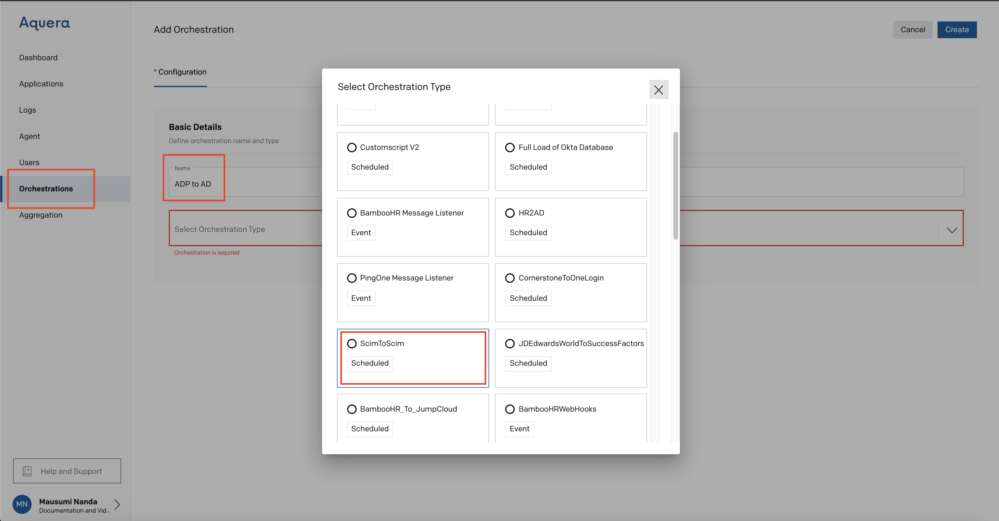
Enter a name to the Orchestration - ADP to AD
Apply SCIMToSCIM
Select Source (ADP) and Target (AD)

-
Report Only - Checkbox is left unchecked.
- When selected, a report is generated which shows what would be changed without actually making the changes.
-
Update Limit - Unlimited.
- The maximum number of records to update in a single run. Click on Save Changes
-
Termination Delay - Unlimited.
- The number of days to wait after a record has been deactivated before deleting the associated target record.
-
Match Expression - [ENT].employeeNumber.
- Expression used to determine which target record matches a given source record.
Click Create
Orchestration is successful between ADP as Source and AD as target

Click ADP to AD Orchestration
Go to Attribute Map
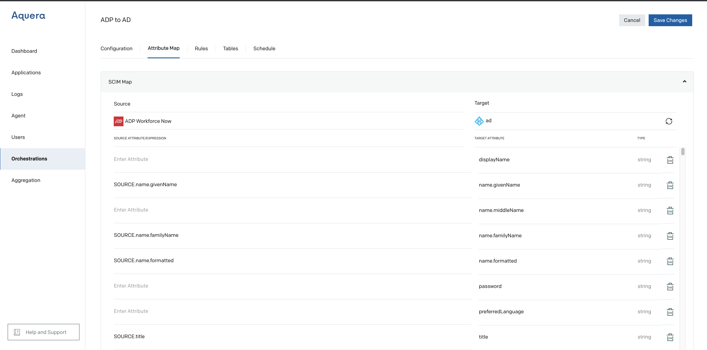
Map the Source to Target. The Source is pre-populated. The target is client-specific.
Save changes
Source Configuration
ADP Workforce Now (ADP)
On the Add Application page, the following fields can be seen:
- Display Name: Enter the display name for the application.
- Description: Enter a description for the application.
- Pick your Protocol: Displays the protocol as SCIM.
- Copy this URL: Displays the URL. This URL is required to configure ADP WorkForceNow on an Identity Service Provider.
-
Aquera Tenant Attributes:
- MakeActiveXDaysBeforeHireDate is set to the number of days.
- DeactivationTimeForXEmployee and ActivationTimeForNewEmployee are set to Time and Time Zone format where the time is in the Hours:Minutes:Seconds format and TimeZone can be for example -08:00 which is Pacific Standard Time. The timezone component is optional.
- Populate Photos checkbox is checked. When the checkbox is checked, the photos are retrieved.
- Ignore Users without Work Email (set active false)- By Default, this Checkbox is left unchecked
- Authentication: Bearer Token is used
- Schema: The Users table is populated
Click Create to add ADP WorkForceNow Application.
Aquera Tenant Attributes
These are the Aquera tenant Attributes
- MakeActiveXDaysBeforeHireDate is the Aquera tenant Attribute where the employer activates a new employee account for a specified number of days before the actual hiring begins.
- DeactivationTimeForXEmployee is the Aquera Tenant Attribute where the employer can specify the exact time on the date of termination, after which the employee status will be terminated.
- ActivationTimeForNewEmployee is the Aquera Tenant Attribute where the employer can specify the exact time on the date of hire, after which the employee status will be active.
- Populate Photos when the checkbox is checked, the photos are retrieved.
- Ignore Users without Work Email (set active false) by default this checkbox is left unchecked.
MakeActiveXDaysBeforeHireDate is set to a number of days.
DeactivationTimeForXEmployee and ActivationTimeForNewEmployee are also set in a similar manner. Time and Time Zone format where Time is in the Hours:Minutes:Seconds format and TimeZone is in Pacific Standard Time. For example it is set to 12:30:00-08.00
Target Configuration
On the Add Application page, the following fields can be seen:
- Display Name: Enter the display name for the application.
- Description: Enter a description for the application.
- Pick your Protocol: Select the protocol as SCIM, this will populate the fields in the Schema accordingly.
- Copy this URL: Copy the URL and paste it at the time of provisioning in the Identity Service Provider.
- Tenant: This is your Active Directory server. It should be specified as name:port. Name can be an IP address or it can be a fully qualified DNS name that is reachable from Aquera Cloud. Port is typically 636 when using encryption (LDAPS), or 389 for clear text.
- Connection: The Connection may be Direct or Aquera Agent
- Aquera Tenant Attributes: The various Aquera Tenant Attributes are CN=Users, DC=aquera and DC=com
- Connect with Idaps: This checkbox is Checked by Default.
- Authentication: To support AD updates, specify credentials for an account with Domain Admin privileges. To support only imports from AD (read only), specify credentials for a normal user account.
- Schema: Schema consists of the SCIM Attributes and the Custom Attributes of Users and SCIM Attributes of Groups.
Click Create to add Active Directory Application.
Tenant
This is your Active Directory server. It should be specified as name:port. Name can be an IP address or it can be a fully qualified DNS name that is reachable from Aquera Cloud. Port is typically 636 when using encryption (LDAPS), or 389 for clear text.
Authentication
To support AD updates, specify credentials for an account with Domain Admin privileges. To support only imports from AD (read only), specify credentials for a normal user account.
Orchestration Parameters
Source SCIM
This parameter to the orchestration defines the SOURCE system
This source must be configured as ADP in the applications list for your tenant.
Target SCIM
This parameter to the orchestration defines the DESTINATION system
This destination must be configured as Active Directory in the applications list for your tenant.
Report Only
This parameter when true directs the orchestration to run in read-only mode.
A report is generated that can be examined to ensure that the users will be created/updated/deleted in the Active Directory.
Mapper
This parameter is used to create a map of the user in Active Directory from expressions from ADP. These expressions allow you to specify how each attribute will be populated.
The Mapper is Client Dependent and varies from Connector to Connector.
Group Management
if the group expression is undefined then the group list will not be modified during the PUT or POST.
If you would like to remove a user from all of their groups then the expression must evaluate to the empty list [].
The managed group list provides a list of groups that the Orchestration will manage.
Only these groups will be modified by the orchestration.
This allows the target to have groups that are managed in the target, for example, Active Directory security groups managed by Active Directory and groups managed by the orchestration.
The list of groups will be the displayName of each group.
The groupDisplays must be unique in the target directory.
If the group name is redundant in the target then that group cannot be managed as the orchestration will not know which group of the two to add the user.
Email Templates
The email templates allow for the customization of email messages that are sent to the manager and/or administrator.
These templates allow for substitution of attribute values of the corresponding user in the email message itself by utilizing {{attribute_name}}.
To run the Orchestration
The Orchestration may be executed or killed once created.
To Run the Orchestration, click Execute
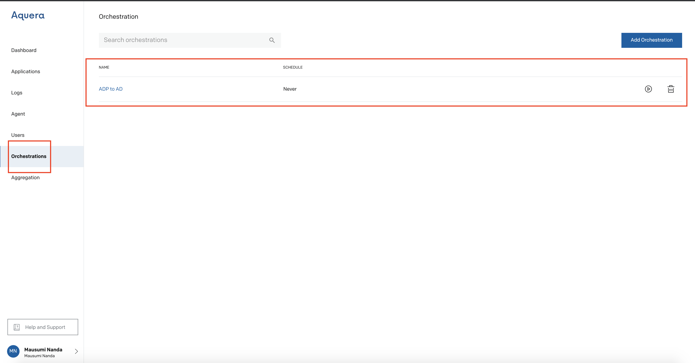
Types of Orchestration
Event
Event Listener is a type of orchestration that enables Users to get updated information in all the destination channels by making the changes at the source channel alone.
By using this type of orchestration, Users need not spend time updating all the channels, time and again. The frequency with which the data to be updated is automated and the orchestration is just a one-time exercise.
Click Orchestration -> Add Orchestration
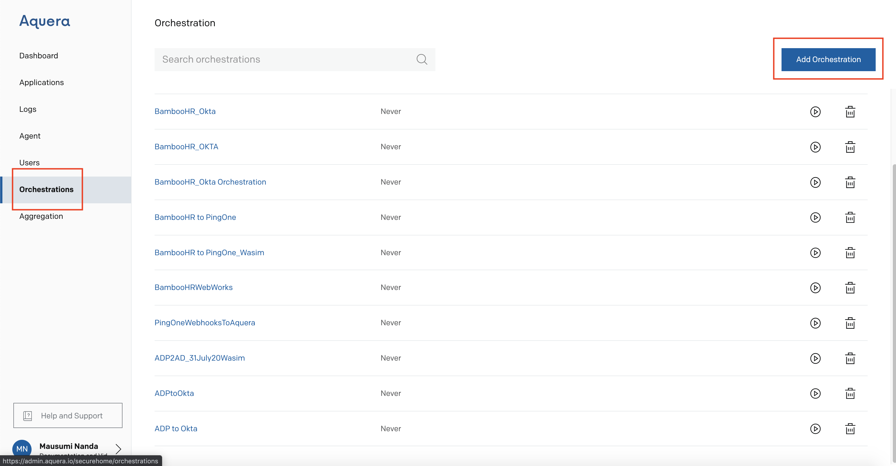
Enter a Name for the Orchestration (here it is ADP to AD)

Event-based Orchestrations are shown below

Scheduled
Scheduled based Orchestrations are as follows
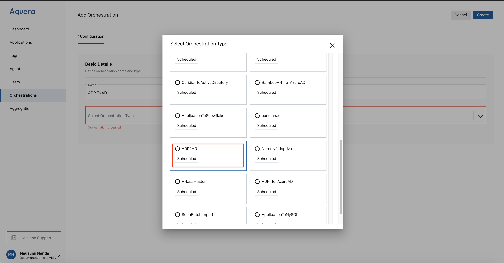
ADP to AD is a Scheduled Based Orchestration
How to View Logs for Orchestration
Go to Logs -> Orchestration

Orchestration shows a Success status
Functionality of various Orchestration tabs
Configuration
Basic Details
Defines the Orchestration Name and type
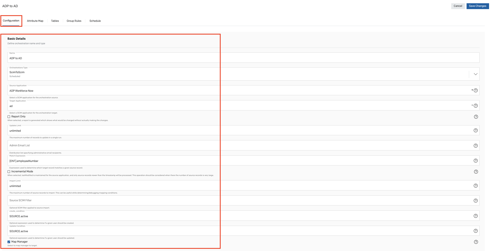
Creation E-Mail Details

Deactivation E-Mail Details

Advanced Details
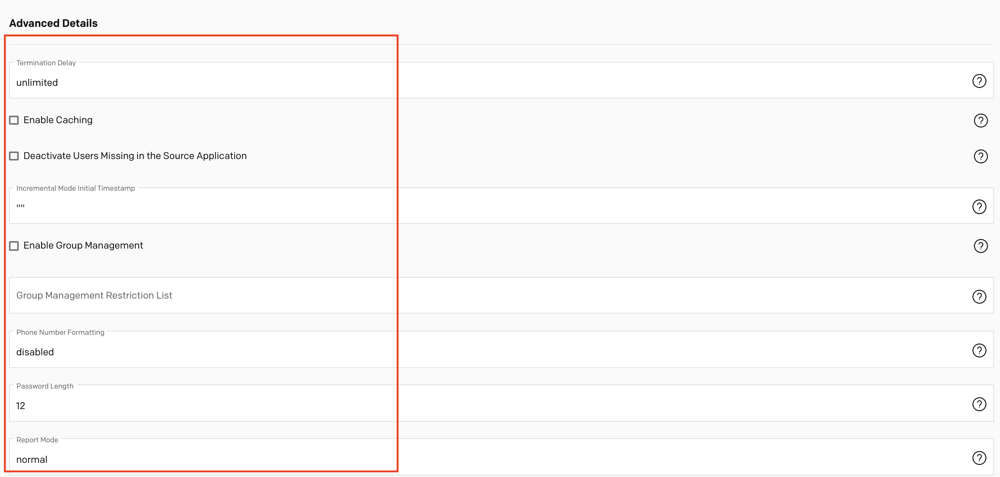
Attribute Mapping
Enter an userID to Preview their mappings
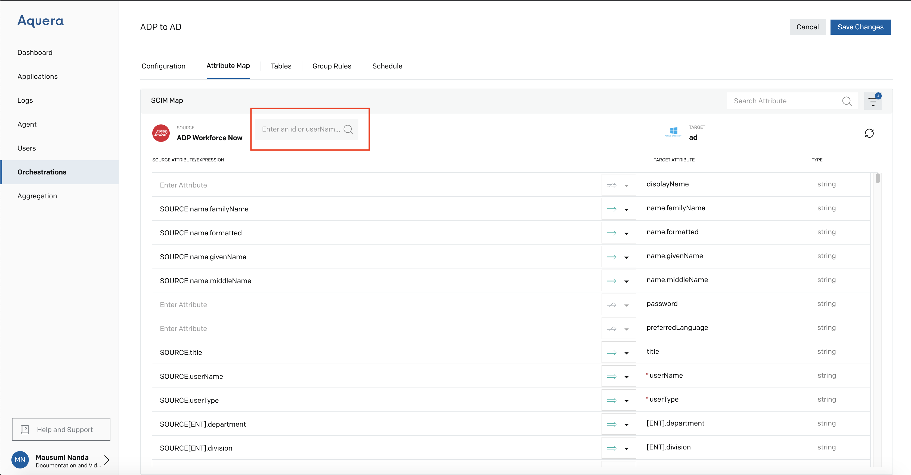
Enter a valid userID from the ADP Application (Data Section), for example G3YHTE09WQRQZRGW (Follow the next section for pulling the data from the ADP application)
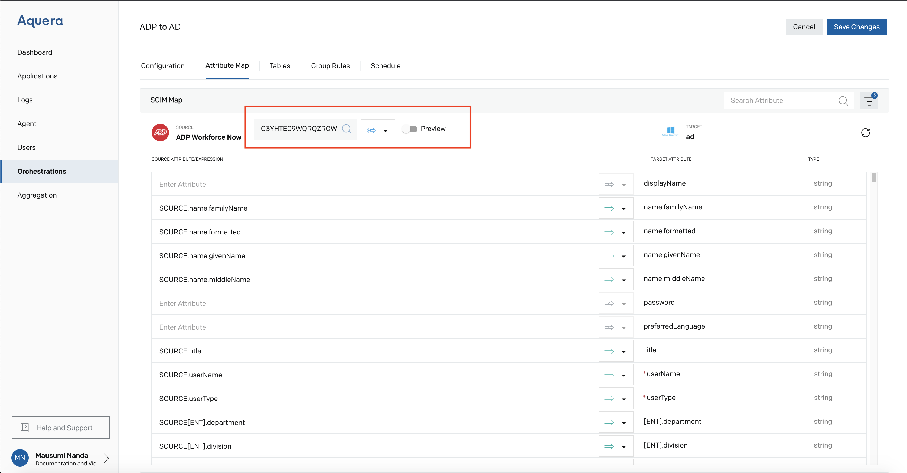
Click SearchTurn on Preview button
 Mappings Preview is shown
Mappings Preview is shown
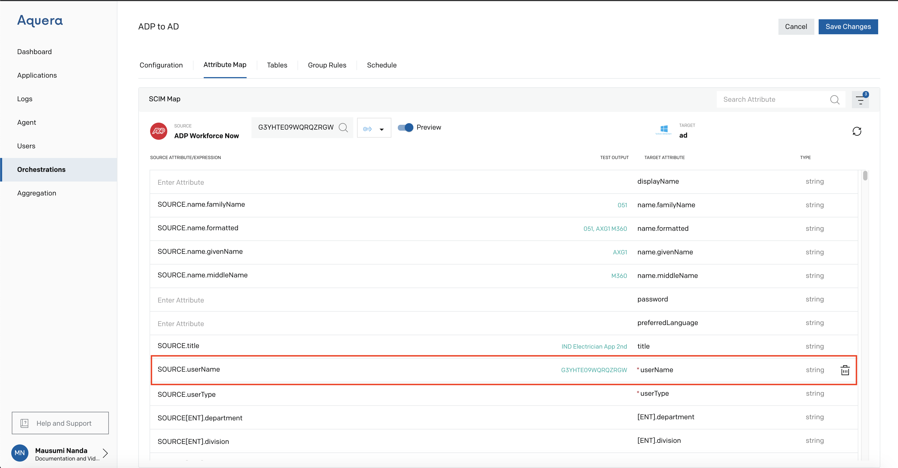
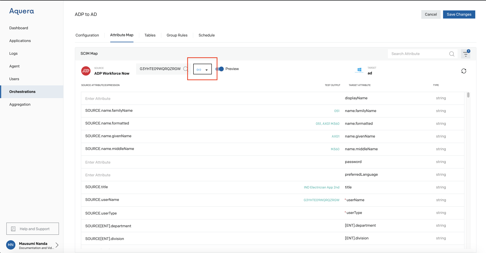
Click Create

Click Save Changes
The ADP to AD Attribute mapping is Successful

Steps to pull the Data from the ADP Application
Go to ADP Application that has already been created prior to the Orchestration

Goto the Data Tab

Copy the Field for userID (marked as True)

Use this userID in the above section
Tables
User needs to go Orchestration and Select the Orchestration concerned, Click on Tables and then Add Table.
The table inputs can be entered either manually or in the form of uploading a file. To enter manually, Users can Click on 'Add Row' and enter the Name and Values. Once it is completed, click on 'Add'.
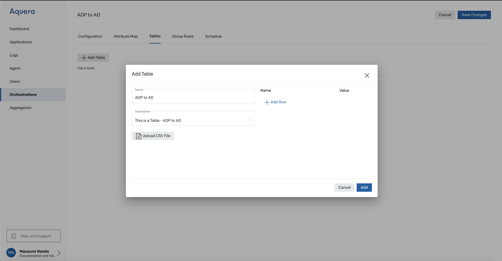
Click Add
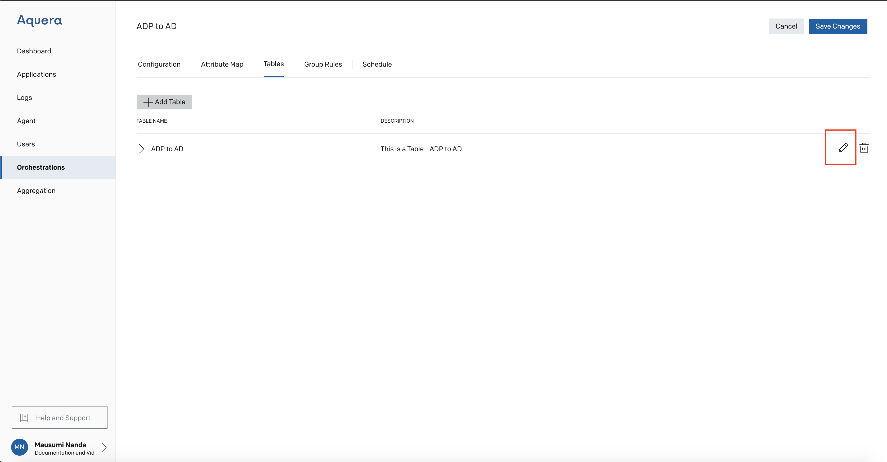
Click Edit
Add Row
Enter a Name and Value
Click Update
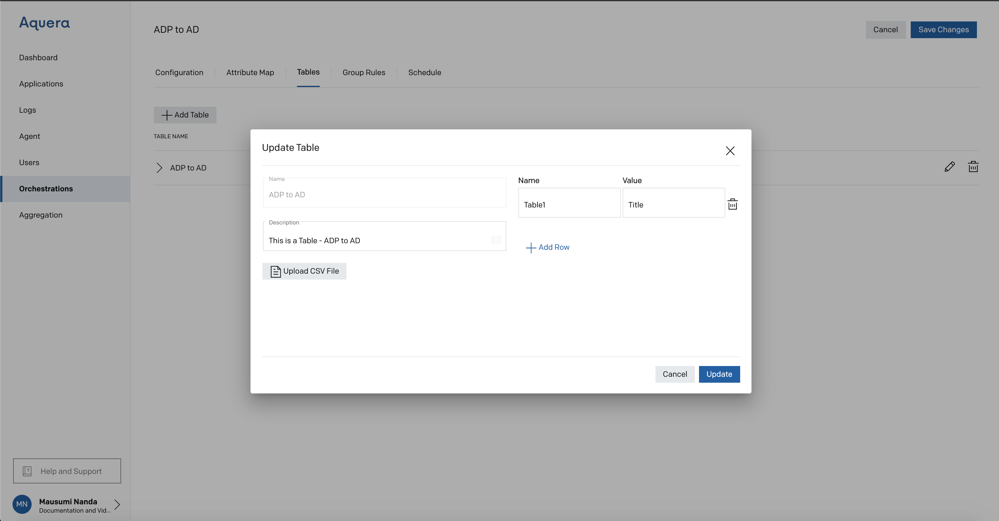
Save the changes
To use this Table in Orchestration
Go to Attribute Map
The Name here is Table1 and the Value is Title
Take the UserId G3YHTE09WQRQZRGW from the ADP Application

Click Preview
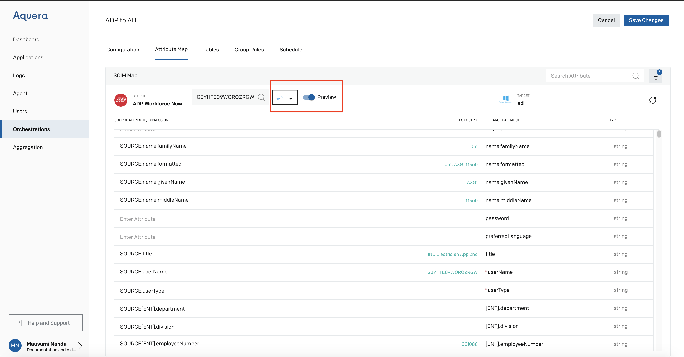
Click Create

Title is Displayed
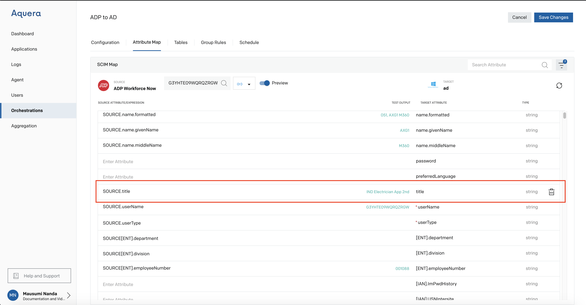
Save Orchestration

Group Rules
When the user checked Enable Group Management checkbox in the Configuration section, Group Rules can be formed for the group being created.
Users can define their own rules for the groups with regard to updating the data.
If the user enabled the Group Management but not framed any Group Rules, the changes made at the source will automatically get reflected at the target.

The Group Rules Expression can utilize any valid Javascript syntax for determining if a user is in a group.
Schedule
Once the orchestration is completed, updates reflecting the changes made at the source in the target can be automated.
Users can select a schedule for the data refresh from the time slots given under 'Schedule'. If there are no data changes, the user can opt for Never.
Depending on the frequency with which the data changes are made, the automation can be done from once every 20 minutes to once in 2 hours.
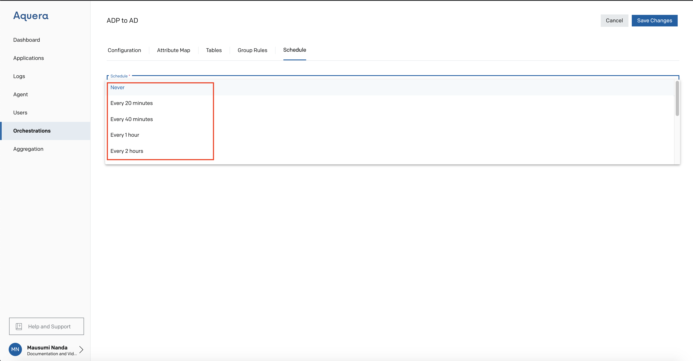
After selecting the frequency and saving the changes, the data updates will be done in a scheduled manner.
Conclusion
Orchestration goes a long way in reaffirming our faith in our goal of a sustained SCIM automation infrastructure